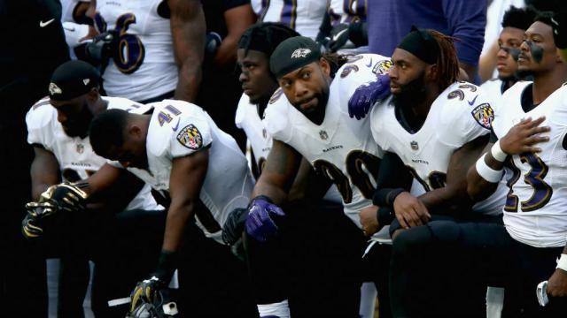

The Nfl anthem protests continued this week even after the league had agreed to fund player activism. At least 13 players demonstrated duting or after the national anthem on sunday(Hill). We would recollect the anthem protests started a season ago when colin Kapernick knelt during the anthem to protest unfair treatments to minority.
If things were going to be interestin in the NFC, the teams on the periphery needed help from the Minnesota Vikings and New Orleans Saints. The Panthers game is perndung sunday afternoon's action, but the cowboys and Packers should be thrilled about what they got from the vikings on sunday.(cbssports)